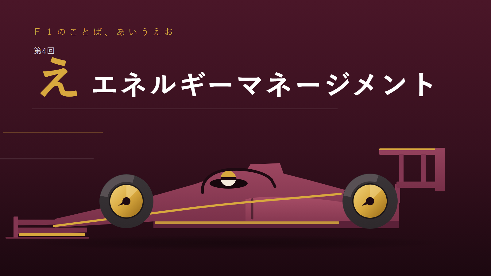
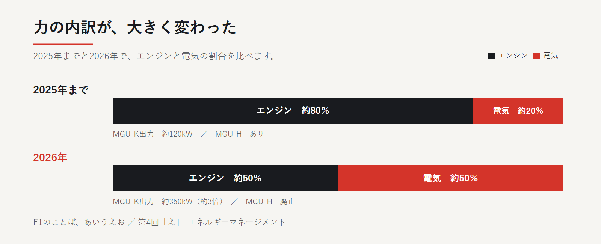
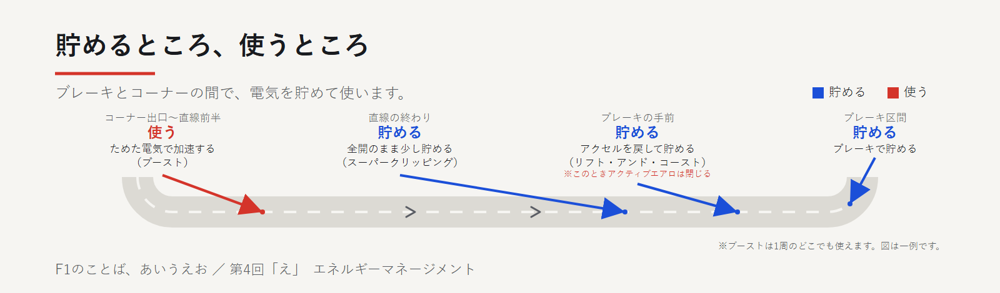

1周の中で、電気をやりくりする
エネルギーマネージメントとは、1周のコースの中で「どこで電気をため、どこで使うか」を決めておくことです。
F1のマシンはガソリンエンジンだけでなく、モーターでも後ろのタイヤを回します。
貯める量にも出す量にも上限があるので、1周の組み立てそのものが勝負になります。
なぜここまで電気が主役になったのか
このモーターの正体はMGU-K。ブレーキなどで発電し、加速では電気で後ろのタイヤを回す装置です。
2026年から、排気の熱で発電するMGU-Hは廃止され、発電はMGU-K一本に集中しました。
力の内訳は2025年までエンジン約80％・電気約20％。2026年は約50％・約50％をめざす設計です。
モーター（MGU-K）の出力も、120kWから350kWへ約3倍に増えました。
電気を貯める場面は、ブレーキ中やアクセルを半分に踏んだとき、早めにアクセルを戻したときなど複数あります。
直線の終わりでアクセル全開のまま一部を発電に回す「スーパークリッピング」という貯め方もあります。
第3回で、ストレートモードはアクセルを戻すかブレーキを踏めば自動で閉じると書きました。
早めに戻して貯めるときはこの可動する板（アクティブエアロ）が閉じ、全開のまま貯めるスーパークリッピングでは開いたままです。


ためた電気を、ここぞで使い切る
ドライバー自身が押せるブーストボタンがあります。1周のどこでも押せ、押すと電気の出力を上乗せできます。
一気に使い切っても、少しずつ分けて使ってもよく、貯めておけば攻めにも守りにも使えます。
これとは別に、判定地点（基本は最終コーナー）を前との差1秒以内で通過すると使える仕組みもあります。
第3回で、前との差が1秒以内なら追加の電気エネルギーを使えると書いた、あのオーバーテイクモードです。
次の周だけ、+0.5MJ（電気の量を表す単位）の追加充電と、速い速度を保てる出力設定が加わります。長い直線があるコースほど効果は大きくなります。
2026年、開幕2戦のあと日本GPの予選では、1周に充電できる上限が9MJから8MJに下げられました。5月のマイアミGPからは、予選の上限がさらに7MJに下げられました。
直線で貯める量が減り、惰性で走る場面も減るとされています。


中継での見つけ方
車の後ろの中央にある楕円形のランプに注目してください。ふだんは赤く光ります。
2026年の開幕前の公式解説によれば、1回点滅は電気の力が絞られている合図、2回点滅は電気の力が完全に止まっている合図。
速い点滅が続くときは充電中です。
オンボード映像（ドライバー視点の映像）でブレーキより手前でアクセルを戻し、エンジン音が静かになる瞬間があれば、それが電気を貯めている瞬間です。
逆に全開のはずなのに直線の終わりで伸びが急に止まる感じがしたら、スーパークリッピングかもしれません。
前の車の1秒以内で最終コーナーを抜けた車が、次の周の長い直線で一気に詰めてきたら。その一押しこそ、ためた電気の使いどころです。